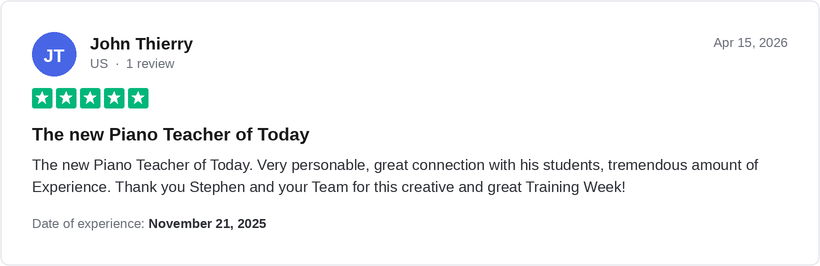

You did the streaks. You followed the falling notes. So why can't you play?
The apps taught you to track a screen, not to play music. It's a method problem, and there's an exit plan. Watch the video below. We built one.

A conversation, not a checkout. You never have to play a note.
1,300+ five-star reviews and counting.



Real Ridley Academy students. Individual results vary.
The apps trained your reflexes. They can't make you a player.
The streaks worked, for what they were designed to do. You showed up daily. But falling-note games build note-tracking reflexes, not musicianship: your fingers learned sequences without ever learning why those notes belong together, and the whole thing lives behind a screen.
Close the app and the music closes with it. That's not a discipline problem. It's what the product was built to do.

What the apps never told you
Note-tracking is a reaction skill
Hitting the right key as a bar falls toward it is a rhythm-game reflex. It isn't reading music and it isn't playing it.
Sequences without understanding
Your fingers memorized patterns you never understood, so one slip and the piece collapses. You can't start from the middle. You can't recover.
The screen owns your playing
If you can only play with a tablet propped on the music stand, the app owns the music. Close it and the music closes with it.
Apps optimize for retention
A subscription is built to keep you subscribed. Streaks and badges are engagement mechanics. Making you a real player would end the relationship.
Lessons optimize for exams
The traditional route isn't the fix either: years of scales and grade pieces, built to pass assessments rather than to make you the person who plays what they love.
Ridley starts with the music
Real songs first. Theory taught through the music you're playing, not before it. You need a path that starts with the music. That's the exit plan.
What happens after you quit the app
Most people quit with no plan. Here's the honest timeline, and why having a plan changes it.
The habit disappears
The daily reminder is gone, and with it the only structure you had. The piano starts collecting quiet.
The sequences fade
The pieces you memorized start slipping, because they were never understood in the first place.
You walk past the piano
It becomes furniture again. "I'll get back to it someday" moves back in. You've heard yourself say it before.
A different story is possible
Your first real song in week one. Theory arriving through the songs you're playing. A mentor correcting course before habits set, and by month three, a growing repertoire played without a screen.
Apps alone vs. the Ridley Method
| Apps | Traditional lessons | The Ridley Method | |
|---|---|---|---|
| Time to your first real song | Often never. Simplified arrangements on a screen, not the real thing. | Months to years. Scales and method books come first. | Week one. Real songs are the starting point, not the reward. |
| Reading music | No. Falling notes replace notation. | Yes, but drilled before you can play anything you care about. | Yes, learned through the songs you're already playing. |
| Playing without the screen | No. Close the app, lose the music. | Eventually. | From the start. The piano is the whole interface. |
| Songs you actually love | Whatever's licensed, simplified. | Whatever's in the grade book. | The music you came to the piano for. |
| Personal feedback | An algorithm scoring key presses. | Yes, 30 to 60 minutes a week. | A mentor who knows your playing and your goals. |
| Cost over two years | A subscription that keeps billing whether you progress or not. | Two years of weekly private lessons runs $5,200 to $10,400. | Walked through openly on your free Breakthrough Session. |
Four phases from screen-follower to pianist
First Song
You play a real song from the very beginning. This is where the app habit gets replaced by something better: the pull of music you can actually play.
Real Repertoire
One song becomes a set. You build a growing list of pieces you can sit down and play, and the concepts inside them start connecting.
Musical Fluency
Reading, theory, and technique come together through the music itself. You understand what your hands are doing and why, so nothing collapses when you slip.
Your Sound
You stop reproducing and start expressing. The piano becomes yours: your taste, your interpretation, your sound.
What does it cost?
For context: two years of weekly private lessons runs $5,200 to $10,400, and most people who start them quit long before the two years are up.
We'll walk through exactly what's included and what it costs on your Breakthrough Session, openly and with zero pressure. No surprise checkout pages, no "act now" pricing.
Book my free Breakthrough SessionStudents who found the exit
"I've had eight piano teachers, and I learned more from the Ridley Academy than all the others combined."
Carlos achieved his goal to play piano in less than 6 months. His verdict: "worth it."
A professional musician with a music education degree, Alice calls the method "streamlined, effective and exciting."
This is for a specific kind of person
We'd rather you self-select out now than book a call that wastes your evening.
This is for you if
- You've put real time into an app (or lessons) and you're done pretending the streak counts as progress.
- You want to sit down at a real piano and play real music, without a screen telling you what to do.
- You're an adult who's willing to practice, as long as the practice is actually going somewhere.
- You want a mentor who hears your playing, not an algorithm that scores your key presses.
This is not for you if
- You're looking for another free app or a five-minute-a-day shortcut.
- You want to noodle occasionally with no real goal. That's fine, the apps are great for that.
- You're not in a position to invest in structured coaching right now.
- You want someone to make you practice. We give you a path worth practicing; the sitting down is yours.
How it works
Apply in 3 minutes
A short application so we understand where you are and what you want from the piano.
Book your session
A free 30-minute conversation. Not a checkout. You never have to play a note.
Meet your mentor
If we're a fit, you're matched with a mentor and a plan built around your music.
Play for life
Not a 400-day streak. A skill that's yours at any piano, in any room, forever.
Your first 12 months, mapped
Apps sell you "5 minutes a day." We'll be straight with you: becoming a pianist takes months, not minutes. Here's what those months look like when they're pointed in the right direction.
First Song, real momentum
Your first real songs, played hands-on at the piano. The screen habit gets replaced by a playing habit.
Real Repertoire
A growing set of pieces you can sit down and play. Reading and theory build through the music itself.
Musical Fluency
The mechanics become understanding. You know why the music works, so you can recover, adapt, and learn new pieces faster.
Your Sound
You're not following anything anymore. You're playing music you love, your way, and choosing what comes next.
Questions app-quitters ask us
Is the call really free? What's the catch?
It's free, and it's a conversation, not a checkout. You never have to play a note. We'll talk about where you are, what the apps did and didn't give you, and what a real path forward looks like for you specifically. If we think we can help, we'll show you exactly what that looks like and what it costs. If not, we'll tell you that too.
Am I too old for this?
Most of our students are over 50, and our students range from 5 to 96. The method was built for adults learning real music, not children working through grade books. If anything, you're right on time.
Do I need a piano?
You'll need access to a piano or a keyboard to practice on, the same one you've been propping the tablet against. If you're not sure whether your instrument is suitable, bring the question to your Breakthrough Session and we'll tell you straight.
How is this actually different from the apps?
The apps train you to track notes on a screen. The Ridley Method trains you to play music at a piano: real songs from week one, theory taught through the music instead of before it, and a mentor who listens to your playing and corrects course. When you close the laptop, everything you've learned comes with you.
What does it cost?
We'll walk through exactly what's included and what it costs on your Breakthrough Session. For context, two years of weekly private lessons runs $5,200 to $10,400. Our job on the call is to show you what you'd get for your investment and let you decide with the full picture in front of you.

The streak is over. The playing can start.
Apply in 3 minutes. Book your free Breakthrough Session. Find out what the apps never taught you.
Book my free Breakthrough SessionA conversation, not a checkout. You never have to play a note.
As featured & trusted across